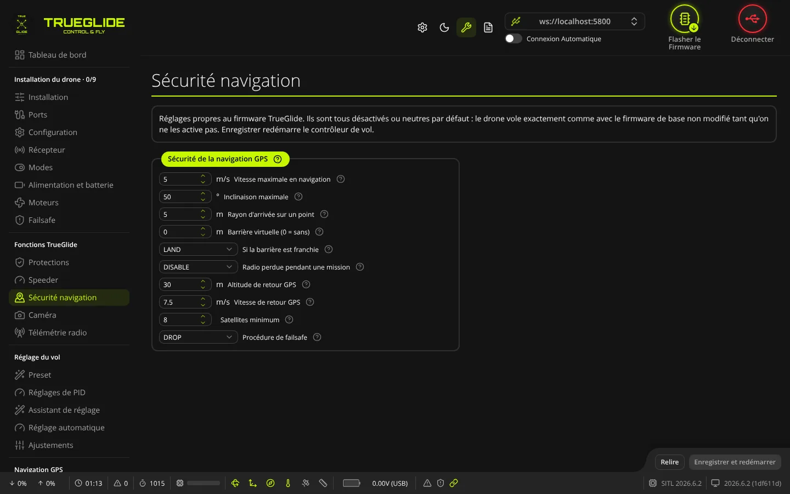
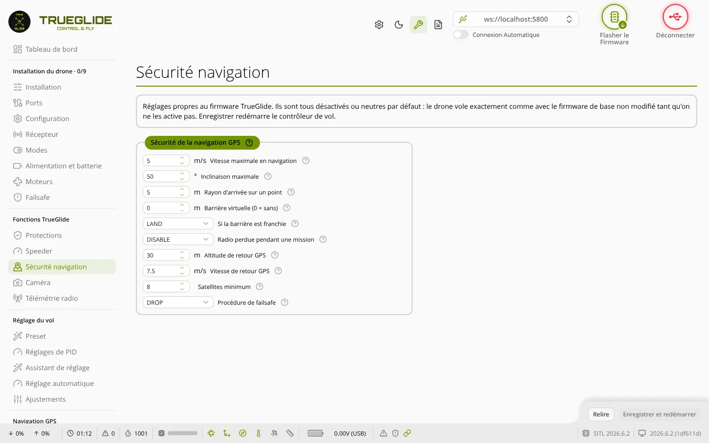

TRUE
TRUESécurité navigation
L'onglet Sécurité navigation (groupe « Fonctions TrueGlide ») regroupe les limites et les comportements de sécurité de la navigation GPS : missions (mode AUTOPILOT des firmwares TRUENAV et TRUENAV_LIGHT), retour GPS (GPS RESCUE) et procédure de failsafe.


Ce que l'onglet affiche
L'onglet montre seulement les réglages que le firmware de la carte possède. Il dépend donc du modèle de firmware :
- TRUENAV et TRUENAV_LIGHT : tous les réglages, plus le cadre « Missions TRUENAV » si la carte a la télémétrie MAVLink.
- TRUEGLIDE : pas de moteur de missions. Les réglages propres aux missions (rayon d'arrivée, barrière virtuelle, radio perdue pendant une mission) n'apparaissent pas.
Si le firmware n'a aucun de ces réglages, l'onglet affiche « Le firmware de la carte n'a pas ces réglages ».
Les distances et vitesses sont stockées dans le firmware en centimètres et cm/s. L'onglet les affiche en mètres et m/s, au dixième près.
Cadre « Sécurité de la navigation GPS »
Missions et maintien de position
- Vitesse maximale en navigation : vitesse sol utilisée entre les points d'une mission quand le point n'a pas sa propre vitesse. C'est aussi la vitesse obtenue manche à fond en POS HOLD. De 1 à 50 m/s. Par défaut : 5 m/s.
- Inclinaison maximale : inclinaison la plus forte que l'autopilote peut commander. Elle limite aussi l'inclinaison en GPS RESCUE et en POS HOLD. De 10 à 70°. Par défaut : 50°.
- Rayon d'arrivée sur un point : un point de passage est considéré atteint à moins de cette distance. De 1 à 50 m. Par défaut : 5 m.
- Barrière virtuelle (0 = sans) : distance maximale au point de départ pendant une mission. De 0 à 10 000 m. Par défaut : 0, pas de barrière. Elle n'agit que si le point de départ (home) a été enregistré.
- Si la barrière est franchie : LAND atterrit sur place, RTH revient au point de départ. Par défaut : LAND.
- Radio perdue pendant une mission : ce que fait le drone si la liaison radio est perdue en mode AUTOPILOT. Par défaut : DISABLE.
| Choix | Radio perdue pendant une mission |
|---|---|
| DISABLE | La mission s'arrête et le failsafe normal s'applique (voir Procédure de failsafe). |
| CONTINUE | Le drone finit la mission. Ensuite, la procédure de failsafe normale prend le relais. |
| LAND | Le drone atterrit sur place. |
Retour GPS (GPS RESCUE)
- Altitude de retour GPS : hauteur au-dessus du point de départ utilisée pour revenir. De 5 à 1 000 m. Par défaut : 30 m.
- Vitesse de retour GPS : vitesse sol pendant le retour. De 0 à 30 m/s. Par défaut : 7,5 m/s.
- Satellites minimum : nombre de satellites nécessaires pour faire confiance au retour GPS. Le point de départ n'est enregistré à l'armement qu'avec un fix 3D et au moins ce nombre de satellites. De 5 à 50. Par défaut : 8.
Procédure de failsafe
- Procédure de failsafe : ce que fait le drone quand la liaison radio est perdue, hors mission. Par défaut : DROP. C'est le même réglage que dans l'onglet Failsafe. La procédure démarre après la première phase du failsafe, réglée dans ce même onglet.
| Choix | Effet |
|---|---|
| AUTO-LAND | Atterrissage automatique, puis désarmement. Sa durée maximale se règle dans l'onglet Failsafe. |
| DROP | Désarmement : les moteurs s'arrêtent et le drone tombe. |
| GPS-RESCUE | Retour au point de départ. Il faut un fix GPS avec assez de satellites à l'armement. |
Cadre « Missions TRUENAV »
Ce cadre n'apparaît qu'avec un firmware TRUENAV ou TRUENAV_LIGHT qui a la télémétrie MAVLink. Les missions s'envoient depuis Mission Planner ou QGroundControl par MAVLink, ou se dessinent dans l'onglet Plan de vol.
- Point 0 = home (Mission Planner) : interrupteur. ON pour Mission Planner (convention ArduPilot) : le point 0 est le home, il n'est jamais volé, et son altitude sert de référence aux altitudes relatives avant l'armement. OFF pour QGroundControl : le point 0 est le premier point de passage. Par défaut : ON dans TRUENAV et TRUENAV_LIGHT, OFF ailleurs (simulateur).
Boutons en bas de l'onglet
- Relire : relit les réglages dans le contrôleur de vol. Les valeurs non enregistrées sont perdues.
- Enregistrer et redémarrer : actif seulement si une valeur a changé. Le logiciel envoie seulement les réglages modifiés, puis enregistre : le contrôleur de vol redémarre et le logiciel se reconnecte. Si une valeur est hors limites, rien n'est enregistré.
Réglages équivalents dans le CLI
| Libellé dans l'onglet | Réglage CLI | Unité dans le CLI | Défaut |
|---|---|---|---|
| Vitesse maximale en navigation | ap_max_velocity | cm/s (100 à 5000) | 500 |
| Inclinaison maximale | ap_max_angle | ° (10 à 70) | 50 |
| Rayon d'arrivée sur un point | ap_waypoint_arrival_radius | cm (100 à 5000) | 500 |
| Barrière virtuelle (0 = sans) | ap_max_distance_from_home | m (0 à 10000) | 0 |
| Si la barrière est franchie | ap_geofence_action | LAND / RTH | LAND |
| Radio perdue pendant une mission | ap_rx_loss_policy | DISABLE / CONTINUE / LAND | DISABLE |
| Altitude de retour GPS | gps_rescue_return_alt | m (5 à 1000) | 30 |
| Vitesse de retour GPS | gps_rescue_ground_speed | cm/s (0 à 3000) | 750 |
| Satellites minimum | gps_rescue_min_sats | 5 à 50 | 8 |
| Procédure de failsafe | failsafe_procedure | AUTO-LAND / DROP / GPS-RESCUE | DROP |
| Point 0 = home (Mission Planner) | mav_mission_home_item | OFF / ON | ON (TRUENAV) |
Pour régler le GPS lui-même, voir l'onglet GPS.